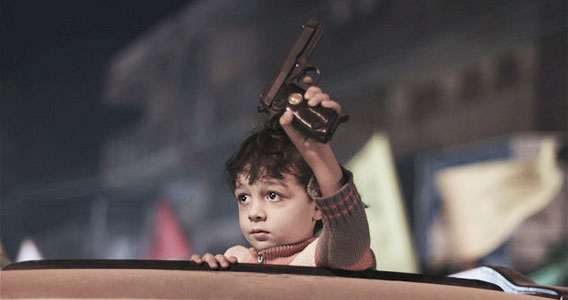
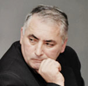

НИКТО НА ЮЖНОМ КАВКАЗЕ НЕ СМОЖЕТ ПОСТРОИТЬ ЗАБОР И ЖИТЬ ОТДЕЛЬНО

31 марта и 1 апреля, в рамках фестиваля «Стоп», Кавказский Центр Миротворческих Инициатив организовал показ двух грузинских фильмов «Поездка в Карабах» и «Поездка в Карабах -2». Несмотря на то, что зал в Доме культуры Ноемберяна не отапливался, и не был заполнен, те, кто пришел, с интересом посмотрели фильмы и активно участвовали в их обсуждении. «От Мимино до наших дней: Южнокавказская трансформация», «Война в искусстве: процесс самоочищения или воспроизводства» такими были темы дискуссии.
Участники абхазской войны, в их числе и Леван Коринтели, продюсер фильма, показали жизнь в Грузии в смутное военное время. Фильмы, представленные на фестивале, сняты в 2005 и 2009 годах. В этом году, 1 марта состоялась премьера уже третьего фильма под тем же названием, и директор фестиваля Георгий Ванян, отметил, что эти фильмы очень популярны в Грузии, они, прежде всего, помогают грузинам узнать самих себя, и параллельно с реформами Саакашвили создают почву для новой Грузии, с новой системой ценностей.
В «Поездке в Карабах-2» преобладает оптимизм и дух миролюбия: снаряды, которые грузины покупают на карабахском фронте у азербайджанской стороны, не подходят по диаметру к стволу огнемета. Погрязший в неимоверных долгах наркоман Гоглико уговаривает своего друга Гио оставить фронт и позаботиться о своем ребенке, которого скоро родит проститутка.
В приграничном Ноемберяне фильмы восприняли неоднозначно, но с интересом. И это естественно, поскольку это фильмы с подтекстом. Главным посылом грузинских фильмов в том, что стереотип «Мимино» сломан: в отношениях армян, грузин и азербайджанцев есть разные проблемы. И вместе с тем Южный Кавказ – это общий дом, в котором мир, хотя и с трудностями, но неизбежно должен воцариться. Нельзя допускать новую войну, и отдавать судьбу людей в замасленные руки генералов (один из персонажей фильма).
В обсуждении фильмов участвовал мажоритарный кандидат в депутаты Национального собрания Армении на 40-ом избирательном участке региона Тавуш, член совета старейшин Ноемберяна, Варужан Бабаджанян, который сказал: «На смену войне, пришла война во имя мира Южный Кавказ - многонациональный регион и наши страны, я уверен, найдут путь к миру. Мы, ноемберянцы, живем на стыке границ трех стран. И я надеюсь, что наши общества найдут решение конфликта, основанное на взаимных уступках.» В.Бабаджанян позитивно оценил 15-летнюю деятельность Кавказского Центра Миротворческих Инициатив в направлении установления доверия и мира между народами. По его словам, эта деятельность разрушает препятствия в межнациональных отношениях, и выразил надежду, что то же самое будет сделано на государственном уровне. Кандидат в депутаты заявил, что Текалинский процесс станет частью его предвыборной программы. В. Бабаджанян отметил, что пока остается нерешенным вопрос демаркации армяно-грузинской границы, и есть нехватка доверия. Поэтому, например, на днях таксист из села Когб Ноемберянского района, который случайно оказался на территории Грузии, был арестован грузинскими пограничниками.
Писатель и режиссер Самвел Бегларян, который принял активное участие в обсуждении, посчитал символичным тот факт, что после просмотра первого фильма, на экране Дома культуры Ноемберяна еще долго оставались титры с фамилиями творческой группы: грузинскими, азербайджанскими и армянскими. Кстати, в фильме образ наркобарона олицетворил знаменитый грузинский режиссер Роберт Стуруа, а роль абхазской снайперши - знаменитая грузинская балерина Ната Мурванидзе. Самвел Бегларян сказал также следующее: «В фильме есть слово-понятие «русский», но самих русских нет. Это напоминает притчу о сатане, он невидим, но замешан во всем. Во всем, что происходит на Южном Кавказе, замешана Россия.»
Самвел Бегларян вспомнил, что в советские годы в фильмах русских режиссеров армяне и грузины олицетворяли колоритные персонажи: продавцов фруктов на рынке, или готовящих шашлык веселых мужчин, в то время как было много знаменитых интеллигентов армянской и грузинской национальности. Бегларян отметил, что в фильме армяне и азербайджанцы ругают друг друга одинаковыми словами, у них есть «своя правда» и они ищут судью чтобы доказать свою справедливость, и считают грузин судьями. По мнению Самвела Бегларяна у Грузии есть общий экономический интерес с Азербайджаном, поэтому и она не может быть непредвзятой судьей.
Бывший командир военной части Ноемберяна, участник боев самообороны Сашик Махсудян сказал, что защита родной земли это священная обязанность каждого человека. Он отметил, что даже во время сильных межнациональных боев, между армянами и азербайджанцами было стремление понять друг друга и прийти к миру: «На границе я встречался с командиром азербайджанского военного корпуса. Он был интеллигентным парнем. Газопровод взорвали, и мы проводили ремонтные работы на нем. Договаривались, что во время этих ремонтных работ они стрелять не будут. Он давал слово офицера и оставался верен этому слову. В то время уже были и жертвы, и разрушения, а командир азербайджанского корпуса во время наших встреч говорил, что Кавказ будет цветущим раем для всех народов. Я не выдержал один раз, сказал: Ты что романтик? Если Эльчибей тебе, а Левон Тер-Петросян мне прикажет, мы не будем стрелять?»
С. Махсудян отметил также, что азербайджанцы, еще в советские времена, давали оружие своим детям и добавил, мы – армяне, слишком интернациональны, несмотря на то, что мы боевой народ, но для того, чтобы применить силу, нужно, чтобы нож до кости дошел. Сколько раз было договаривались прекратить огонь, но они (азербайджанцы) всегда первыми нарушали. Нас всего горстка осталась, потому что всегда доверяли другим. Он также отметил, что в фильме место действия отмечено: «Нагорный Карабах, Азербайджан».
Руководитель интеллектуального клуба Ноемберяна «Ника», учитель Армен Амирагян, отметил космополитические тенденции в фильмах: «Я не знаю, каким бы был тот же фильм, если бы его снимал армянский или азербайджанский режиссер. Грузины здесь представляются с позиции «смотрящего со стороны». И здесь есть определенные черты космополитизма, осознание себя гражданином мира, а мы очень далеки от этого, хотя это и положительная вещь. Я приветствую проявления народной дипломатии. Хотим или не хотим, на Южном Кавказе мы будем жить вместе, как израильтяне живут с арабами. Если проблема Карабаха решится, наши отношения восстановятся. У каждого своя война. Я хотел понять, какая она, эта индивидуальная война в фильме. Были люди, шли на войну за идею, были настоящие патриоты. Но во всех войнах были пустые, опустошенные люди, которые со звериными глазами готовы пытать и убивать. Генералы постоянно что-то жующие и пьющие. Герой фильма Спартак утоляет свою личную месть, говоря «Я бы не пошел на войну, если бы зять (абхаз) не сжег мой дом» и добавляет что «неважно, кто начал». Я в фильмах не заметил грузинской патриотической линии.
Учитель истории приграничного села Воскепар Нвер Бегларян, убежден, что мир на Южном Кавказе не имеет альтернативы: «Конфликт здесь глубокий и многослойный и не имеет однозначного решения. Решение конфликта подобно выдергиванию гвоздей из тела. С течением времени, по одному можно выдергивать гвозди ненависти. Но делать это не грубо, потому что боль при выдергивании может привести к обратному эффекту, и вражда только углубится. Никто на Южном Кавказе не сможет построить забор и жить отдельно».
Воскан Саргсян
05-04-12
Ноемберян
tesankyun.am
Перевод с армянского: Л. Погосян
На фото вверху: мальчик
с пистолетом на праздничной
демонстрации в г.Газа.
21 ноября 2012 года,
палестинцы вышли
на улицу, чтобы
отпраздновать соглашение
о прекращении огня
между Израилем и «Хамас»,
которое они считают своей
победой над Израилем.
Режим прекращения огня
был введен после
восьмидневного конфликта
в секторе Газа, который
унес жизни ста шестидесяти
двух палестинцев и пяти
израильтян.
Aли Али/European Pressphoto Agency/ telegraph.co.uk
Участники абхазской войны, в их числе и Леван Коринтели, продюсер фильма, показали жизнь в Грузии в смутное военное время. Фильмы, представленные на фестивале, сняты в 2005 и 2009 годах. В этом году, 1 марта состоялась премьера уже третьего фильма под тем же названием, и директор фестиваля Георгий Ванян, отметил, что эти фильмы очень популярны в Грузии, они, прежде всего, помогают грузинам узнать самих себя, и параллельно с реформами Саакашвили создают почву для новой Грузии, с новой системой ценностей.
В «Поездке в Карабах-2» преобладает оптимизм и дух миролюбия: снаряды, которые грузины покупают на карабахском фронте у азербайджанской стороны, не подходят по диаметру к стволу огнемета. Погрязший в неимоверных долгах наркоман Гоглико уговаривает своего друга Гио оставить фронт и позаботиться о своем ребенке, которого скоро родит проститутка.
В приграничном Ноемберяне фильмы восприняли неоднозначно, но с интересом. И это естественно, поскольку это фильмы с подтекстом. Главным посылом грузинских фильмов в том, что стереотип «Мимино» сломан: в отношениях армян, грузин и азербайджанцев есть разные проблемы. И вместе с тем Южный Кавказ – это общий дом, в котором мир, хотя и с трудностями, но неизбежно должен воцариться. Нельзя допускать новую войну, и отдавать судьбу людей в замасленные руки генералов (один из персонажей фильма).
В обсуждении фильмов участвовал мажоритарный кандидат в депутаты Национального собрания Армении на 40-ом избирательном участке региона Тавуш, член совета старейшин Ноемберяна, Варужан Бабаджанян, который сказал: «На смену войне, пришла война во имя мира Южный Кавказ - многонациональный регион и наши страны, я уверен, найдут путь к миру. Мы, ноемберянцы, живем на стыке границ трех стран. И я надеюсь, что наши общества найдут решение конфликта, основанное на взаимных уступках.» В.Бабаджанян позитивно оценил 15-летнюю деятельность Кавказского Центра Миротворческих Инициатив в направлении установления доверия и мира между народами. По его словам, эта деятельность разрушает препятствия в межнациональных отношениях, и выразил надежду, что то же самое будет сделано на государственном уровне. Кандидат в депутаты заявил, что Текалинский процесс станет частью его предвыборной программы. В. Бабаджанян отметил, что пока остается нерешенным вопрос демаркации армяно-грузинской границы, и есть нехватка доверия. Поэтому, например, на днях таксист из села Когб Ноемберянского района, который случайно оказался на территории Грузии, был арестован грузинскими пограничниками.
Писатель и режиссер Самвел Бегларян, который принял активное участие в обсуждении, посчитал символичным тот факт, что после просмотра первого фильма, на экране Дома культуры Ноемберяна еще долго оставались титры с фамилиями творческой группы: грузинскими, азербайджанскими и армянскими. Кстати, в фильме образ наркобарона олицетворил знаменитый грузинский режиссер Роберт Стуруа, а роль абхазской снайперши - знаменитая грузинская балерина Ната Мурванидзе. Самвел Бегларян сказал также следующее: «В фильме есть слово-понятие «русский», но самих русских нет. Это напоминает притчу о сатане, он невидим, но замешан во всем. Во всем, что происходит на Южном Кавказе, замешана Россия.»
Самвел Бегларян вспомнил, что в советские годы в фильмах русских режиссеров армяне и грузины олицетворяли колоритные персонажи: продавцов фруктов на рынке, или готовящих шашлык веселых мужчин, в то время как было много знаменитых интеллигентов армянской и грузинской национальности. Бегларян отметил, что в фильме армяне и азербайджанцы ругают друг друга одинаковыми словами, у них есть «своя правда» и они ищут судью чтобы доказать свою справедливость, и считают грузин судьями. По мнению Самвела Бегларяна у Грузии есть общий экономический интерес с Азербайджаном, поэтому и она не может быть непредвзятой судьей.
Бывший командир военной части Ноемберяна, участник боев самообороны Сашик Махсудян сказал, что защита родной земли это священная обязанность каждого человека. Он отметил, что даже во время сильных межнациональных боев, между армянами и азербайджанцами было стремление понять друг друга и прийти к миру: «На границе я встречался с командиром азербайджанского военного корпуса. Он был интеллигентным парнем. Газопровод взорвали, и мы проводили ремонтные работы на нем. Договаривались, что во время этих ремонтных работ они стрелять не будут. Он давал слово офицера и оставался верен этому слову. В то время уже были и жертвы, и разрушения, а командир азербайджанского корпуса во время наших встреч говорил, что Кавказ будет цветущим раем для всех народов. Я не выдержал один раз, сказал: Ты что романтик? Если Эльчибей тебе, а Левон Тер-Петросян мне прикажет, мы не будем стрелять?»
С. Махсудян отметил также, что азербайджанцы, еще в советские времена, давали оружие своим детям и добавил, мы – армяне, слишком интернациональны, несмотря на то, что мы боевой народ, но для того, чтобы применить силу, нужно, чтобы нож до кости дошел. Сколько раз было договаривались прекратить огонь, но они (азербайджанцы) всегда первыми нарушали. Нас всего горстка осталась, потому что всегда доверяли другим. Он также отметил, что в фильме место действия отмечено: «Нагорный Карабах, Азербайджан».
Руководитель интеллектуального клуба Ноемберяна «Ника», учитель Армен Амирагян, отметил космополитические тенденции в фильмах: «Я не знаю, каким бы был тот же фильм, если бы его снимал армянский или азербайджанский режиссер. Грузины здесь представляются с позиции «смотрящего со стороны». И здесь есть определенные черты космополитизма, осознание себя гражданином мира, а мы очень далеки от этого, хотя это и положительная вещь. Я приветствую проявления народной дипломатии. Хотим или не хотим, на Южном Кавказе мы будем жить вместе, как израильтяне живут с арабами. Если проблема Карабаха решится, наши отношения восстановятся. У каждого своя война. Я хотел понять, какая она, эта индивидуальная война в фильме. Были люди, шли на войну за идею, были настоящие патриоты. Но во всех войнах были пустые, опустошенные люди, которые со звериными глазами готовы пытать и убивать. Генералы постоянно что-то жующие и пьющие. Герой фильма Спартак утоляет свою личную месть, говоря «Я бы не пошел на войну, если бы зять (абхаз) не сжег мой дом» и добавляет что «неважно, кто начал». Я в фильмах не заметил грузинской патриотической линии.
Учитель истории приграничного села Воскепар Нвер Бегларян, убежден, что мир на Южном Кавказе не имеет альтернативы: «Конфликт здесь глубокий и многослойный и не имеет однозначного решения. Решение конфликта подобно выдергиванию гвоздей из тела. С течением времени, по одному можно выдергивать гвозди ненависти. Но делать это не грубо, потому что боль при выдергивании может привести к обратному эффекту, и вражда только углубится. Никто на Южном Кавказе не сможет построить забор и жить отдельно».
Воскан Саргсян
05-04-12
Ноемберян
tesankyun.am
Перевод с армянского: Л. Погосян
Aли Али/European Pressphoto Agency/ telegraph.co.uk
Кавказский Центр Миротворческих Инициатив

© Ассоциация Текали - info@southcaucasus.com